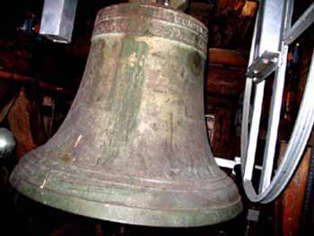
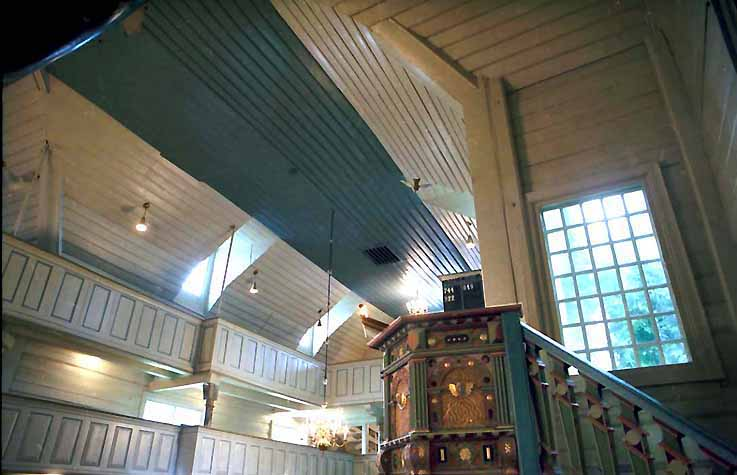
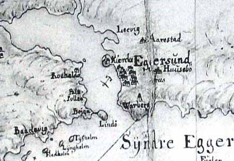
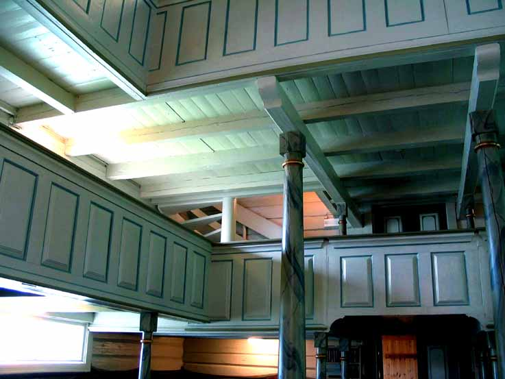
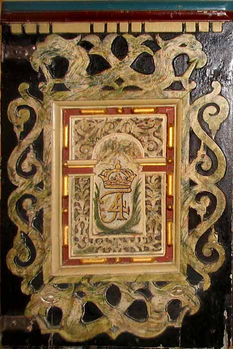
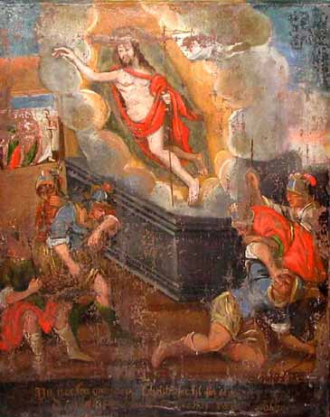
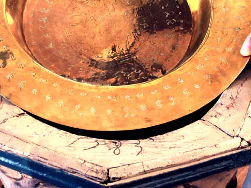
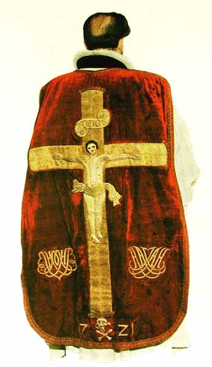

Egersund kirke
Foto: Torvald Slettebø, Universitetet i Agder, Seniorsenteret
Tekster: Torvald Slettebø ved hjelp av Arvid Midbrød
Kirkebyggeren Ludvig Caspersen Feyling kom som tysk håndverksgesell fra Waldgirmes, nord for Frankfurt am Main, til Bergen på midten av 1700-tallet. Etter en mellomstasjon i Stavanger, slo han seg endelig ned i Egersund, og ble stamfar til en stor slekt.
Omkring 1785 fikk han ansvaret for en radikal ombygging og utviding av Egersund kirke. Han møtte da en nokså lavloftet langkirke, med en korsarm mot syd. Han gjorde kirken høyere, tilføyde nordre korsarm og klokketårn, og store vinduer. Da den ombygde kirke sto ferdig i 1788 var det den nest største i Rogaland, med 1160 sitteplasser. Utvendig har kirken siden beholdt Feylings arkitektur. Innvendig har det vært en stadig utbygging.

Vi ser til venstre koret, vent mot øst og soloppgang. Da Ludvig Feyling og hans tømmermenn hadde fullført arbeidet, dominerte kirkebygget bybildet. I dag forsvinner det nesten mellom ruvende sentrumsbygg.

Kirkearkitekten kom fra Sentral-Europa, og kjente tidens byggestil godt. Men han har også tilføyet sin egen smak, og dessuten måttet ta hensyn til at det var en ombygging av en allerede eksisterende kirke.
Den tidstypiske rokokko-svuppen på takskjegget, som gir kirken et lett og vennlig preg.
Tårnet er et tilbygg, og forlenger kirken mot vest.
Også lydmessig dominerte kirken en gang bybildet, og kalte menigheten til Guds hus. Mange generasjoner kirketjenere har trukket i klokketauet. Det gjør de ikke lenger. Elektrisiteten har overtatt.
Kirken var en sognekirke, faktisk eid av landssognet. Og folk kom virkelig til kirke den gang, fra hele sognet. Med hest og kjerre. Da trenge kirken stallplass. "Stadlan", som den eldre generasjon husker dem, hadde da fått dører. På bildet ser vi båser, og vi har også et eldre bilde av en versjon uten tak.
Lysvirkningene fra de mange og finurlig plasserte vinduene gjør Egersund kirke til en temmelig enestående rom-opplevelse.
Galleriene ble tilføyd etter hvert som plassbehovet økte: Det kom krav fra myndighetene om sitteplass for enn viss prosentdel av sognets innbyggere. Til slutt måtte man sette inn smale umulig benker langs galleriveggene. Inntil så utviklingen gikk den andre veien: Brannvesenet stengte av galleri-deler. Men da var det forøvrig slutt på den store kirkesøkningen.
Et gammelt kart over "Eggersund" fra året 1708. Kirken ligger samme sted som nå, men den gang på en smal halvøy, med litt bebyggelse bare langs stranda, "Stråndæ", mot varden på Varberg.
Kjerkevika ble ikke utfylt før jernbanen kom, mot slutten av 1800-tallet. Lahedla-bukta derimot ble utfylt mye tidligere. Opprinnelig var kirken en lav langkirke. Ja, opprinnelig var det vel et gudehov her. Det var en vanlig kirkeplassering, og sagn-betegnelsen "Heidningholmen" tyder også på det.
Et sentralt foto i byens historie, tatt fra nordvest fra Kontrari.-åsen, i året 1876, visstnok av fotograf Ferdinand Bugge. Vi ser foran til venstre Areneset med sorenskrivergården Næsgaard. Den spiller en viktig rolle i kirkens historie, som vi skal komme tilbake til.
Bak alteret finner vi årstallet 1607.
En pengekrangel førte til det velsignete resultat at vi fikk beholde nåværende kirke. Det var besluttet at den skulle rives, og arkitekt von Hanno hadde tegnet den nye, som vi ser her. Men by og omliggende herred kunne ikke bli enige om hvem som skulle betale. Og så ble den gamle kirken stående.
Kirken er et tradisjonelt laftebygg, med hver tømmerstokk omhyggelig tilpasset stokken under. Tømmermannen kunne sitt fag, men det var tungt og slitsomt arbeid. Plankehoggerne var også i arbeid med skipsbygging, men der var teknikken en annen.
Det er utrolig mange arbeidstimer som ligger bak en slik vegg, og vi har vel i dag heller ikke tømmermenn med nok trening til å kunne gjøre det like bra som disse.
Så var de også stolte av sitt yrke, og hugde med selvfølelse inn sine bumerker. Disse ble avdekket på kirkens vestvegg, da nye toaletter skulle bygges.
Bygningskunst og dyktighet, og funksjonalisme i beste forstand: Vi ser hva som bærer, og hva som blir båret.
Ludvig Feyling gjorde kirken høyere under taket, satte inn høye vinduer, og føyde til den fjerde korsarmen, mot nord. Men himlingen i den eldste kirken så ikke ut som her. Den var rosemalt.
Vi har i behold bare en eneste dekorert trefjøl som gir oss en forestilling om frodigheten i den gamle dekoren. Med den som hjelpemiddel får vi i fantasien male hele taket slik.
Også veggene var fargerikt dekorerte. En utskjæring i den innvendige plankekledningen lar oss se inn til den opprinnelige dekoren.
De eldste kirkene hadde ikke orgel. Da sang de bare. Nåværende kirkeorgel er nytt, bygget av Rieger Orgelbau i Østerrike, og innviet i 2002. Orgelbyggerne har klart den vanskelige oppgaven å videreføre verdifulle deler av det det gamle orgelet, samtidig som det fine orgeleksteriøret er pietetsfullt bevart, og føyer seg vakkert inn i kirkens arkitektur.
Før det kom orgel og gallerier her, skal det ha vært bibelske bilder på denne veggen. Da det ikke lenger var plass til dem her, må de ha blitt flyttet over til kirkeeieren på den andre siden av Kjerkevika, for der befant bildene seg senere. Men det er en annen historie.
Da Oscar II besøkte kirken i året 1896, fant han en samling gamle kirkestol-dører spikret opp på innsiden av kirketårnet. Det likte han dårlig, og ville heller ha dem til Det Nordiska Museet i Stockholm.
Da begynte egersunderne å ane at det gamle skrotet kanskje likevel ikke var så verdiløst. Men det tok likevel mange år før de gjorde noe med det. Det var i 1880-årene at kirken hadde gjennomgått den hardhendte reparasjonen, med fjerning av dekorerte stolestad-dører og overmaling av annen dekor. Men først i 1940 ble dørene hentet ned igjen fra tårnet og gitt sin gamle plassering tilbake.
De er to typer stolestad-dører, de eldste er de enkleste, laget av Thomas Snekker i 1623, med båndflettingsmotiver.
Hver familie hadde sin benk, som de betalte årlig leie for. Kom ikke familiemedlemmene fulltallige til kirke en søndag, sto benken tom. For ubemidlede våget ikke å sette seg der. De hørte hjemme på galleriene. Det største galleriet fikk økenavnet "Kjerring-lemmen".
Omlag 15 år seinere laget Michel Snekker de frodigere utskårne dørene opp mot koret, med rikt variert flatskurd.
Den vakre døra inn til bispestolen har kong Fredrik den 4.s monogram. Den er for tiden fjernet og satt bort. Fredrik var konge i Danmark-Norge 1699-1730.
Et fotografi fra mellomkrigstiden, kanskje 30-årene. Vegg-draperiene i koret ble avdekket og reparert i den første restaureringen i 1927. Talerstolen og korbuen har her beholdt Feylings lette og luftige rokokko. Men så kommer en merkelig historie:
Under hovedrestaureringen omkring 1940 fant snekkerne at den elegante hvite talerstolen skjulte en barokk fortid: Den gamle stolen sto der ennå, gjemt inni den nye og temmelig uskadd, bare med et rokokko-skall utenpåkledd. I følge uttalelse (notater) fra formannen i restaureringskommiteen i 1940, Anders Feyling, var oppdagelsen av den gamle prekestolen helt tilfeldig.
Og så ble den gamle ærverdige talerstolen fra 1600-årene synlig igjen, og fargedekoren bragt tilbake til opprinnelig utseende. Fra 1785 hadde den vært gjemt. Kirken begynte å bli frodig igjen.
Gamle kirker har en lang utviklingshistorie. Det er i utpreget grad tilfelle med Egersund kirke, som altså i førhistorisk tid rimeligvis begynte som gudehov. Fordi stilbrudd bærer bud om historisk utvikling, godtar vi gjerne at gammel talerstol og nyere korbue ikke "passer sammen".
Kikebelysningen har også en historie. De gamle kirkene var mørke. Ved 1780-ombyggingen fikk Egersund kirke mange og tildels store vinduer, og ble et vidunder av lysvirkninger. Men om kvelden var den mørk, bare med vokslys og kanskje oljelamper. Dette er dagens lysekrone, elektrisk naturligvis.
Det er i nyere tid stilsikkert tilføyd lamper også over galleriene.
Dette var nok opprinnelig parafinlamper, som ble ombygd til elektrisk da strømmen kom fra Øygreidsfossen tidlig på 1900-tallet.

En av disse lysekronene henger fremdeles i trappeoppgangen.
Denne lysekronen har også hengt over midtgangen.
Kirkeskipet er nytt. Det ble bygget av egersunderen Trygve Hansen og hengt opp i 1967. Det er bygget etter modell av et engelsk krigsskip fra 1600-årene. Skipet symboliserer den kristne menighets seilas mot himmelen. I en inventarfortegnelse fra 1722 nevnes "1 lidet Skib hengendis i Kirken". Dette er senere forsvunnet.
Mer tradisjon samlet: Den vakre talerstolen, og bakenfor henger tavler med liste over kirkens prester etter reformasjonen. Malte draperier bak benkene er en restaurering av opprinnelig maling. Veggbjelkene har nok også vært dekorert, i hvert fall stokkelag fra før ombyggingen i 1880-årene.
Tavlene hang tidligere bortgjemt bak altertavla. Nå har de fått den plass de fortjener.
Torgeir Slettebø 1640, leser vi. Han kom fra gården Slettebø, og enkle kår. Men under står det Theofilius Schanche, en embedsmannsønn. Det var vanligere. Theofilius Jonssøn Schanche, sokneprest i Egersund 1649-1663, var sønn av Jon Mogenssøn Schanche, prest i Innvik og Stryn og prost i Nordfjord, og hustru Magdalena Foss, datter av biskop Anders Foss i Bergen.
Historien til skrivergården på Areneset, foran til venstre, er knyttet til kirken, ikke bare ved geografisk naboskap.
Kongen trengte penger, og i 1726 solgte han kirken til sorenskriveren og et par andre formuende Egersunds-borgere. Det var da fremdeles en langkirke. Senere ser vi at det befinner seg 12 ikonpregede kirke-malerier i skrivergården, nå satt sammen til et skjermbrett.
Vi må anta at kirkeeieren flyttet dem hjem til Næsgaard, etter at det ved kirkeombygging ikke lenger var plass for dem på kirkeveggen.
Herskapsfolket på Næsgaard hadde sitt eget gravsted like inn til kirkens korvegg.

I 1972 tilbød Næsgaard-arvingene å selge bilde-skjermbrettet til Dalane Folkemuseum, og i dag står det utstilt i museets herregårdsbygning på Slettebø.
Bildene fremstiller Lidelseshistorien, i dramatiske motiver. De er malt i 1600-årene, sannsynligvis i første halvpart. Kunstneren kjennes ikke, men motivene er tatt etter kobberstikk av nederlenderen Hendrick Goltzius (1558-1617) Vår tids motvilje mot kopiering var ukjent for den tids malere.
Det står forklarende tekst under hvert bilde. Men ellers var det jo egentlig hensikten med kirkemalerier at selve bildene skulle undervise en menighet som kanskje ikke var så lesekyndig.
Kristus mishandles, og korsfestes.
Nedtagning av korset, og Oppstandelsen.
Det kan kanskje nevnes at Egersund kirke, som alle gamle kirker, jo har en katolsk fortid: I et pavebrev av 5. februar 1292 kalles den St.Maria-kirke i Eikundarsund. Og i 1429 omtales Maria kirkesogn i Eikundarsund.
Denne døpefonten var i bruk fra ca. 1820 til 1940. Dåpsvannsmuggen som står oppi fonten, fantes med tre forskjellige dekorer, og ble laget på Egersunds Fayancefabrikk. Den kaltes der for "Rebekkea-krukker til alterbruk", og sto ennå i fabrikkens prisliste fra 1909.
Døpefatet i Egersund kirke er av messing. Det har barokke ornamenter fra 1600-årene og er av tysk opprinnelse. Allerede i 1885 var dekoren så slitt at den var vanskelig å tyde. Fatet nevnes første gang i inventarlista fra 1722, men finnes ikke i lista fra ca. 1620. Døpefonten av tre som nå er i bruk, har innskåret årstallet 1583, men det har vært antydet av fagfolk at det kan være feil. En fontstol ble arbeidet av Thomas snekker i 1623. Omkring 1820 ble den gamle døpefonten tatt ut av bruk, og havnet etter hvert på Dalane Folkemuseum. Ved restaureringen av kirken i 1940 ble også den restaurert og tatt i bruk igjen.

En nyere dåpskanne. Den er en gave fra Egersund bondekvinnelag i 1960.
Altertavlen er malt og signert av Peter Reimers i 1607 . Den er altså helt fra den gamle lavere og mindre langkirkebygningen. Gamle regnskaper viser at man i 1634 måtte "neder riffue det gamle støcke Kierke", som hadde forfalt. Men den vakre altertavlen ble altså flyttet til den nye, eller snarere sterkt ombygde kirke.
Altertavlen er skåret av Thomas Christoffersen Snekker i Stavanger og dekorert av den tyske kirkemaleren Peter Reimers, også bosatt i Stavanger. Dette er hans eldste kjente sakrale arbeid.
Altertavlen har en karakteristisk renessanse-utforming, med gavler øverst, og kannelerte pilastre mellom bildefeltene, og detaljerik ornamental flatskurd.
Midtfeltet med korsfestelsen, og Tro og Håp på de to fløyene, representert med henholdsvis Paulus og Peter.
I midterste gavlfelt Jesu dåp, og i sidegavlfeltene de fornemme givernes monogram og våpenskjold: Lensherre Jørgen Kaas og hustru Mette Banner.

To meget menneskelige engler, fra altertavlens nederste del.
En vakker fargesymfoni, der de gamle vinduene bak gir tonen.
Alterbordet, med renessansedekor.
Vokslys, som før var en nødvendighet, er nå et raffinement.
Kirkesølvet: De to fornemste klenodiene, oblatesken og vinkannen for altervin. Vinkannen er laget av sølvsmeden Andreas Røring i Kristiansand, i henhold til kvittering av 21. januar 1735.
Det store skipet Grev Laurvig hadde kommet i havsnød, med svære skader, og mange av mannskapet syke. Det søkte nødhavn i Egersund, og ble liggende der vinteren over, mens skipet ble reparert og mannskapet frisknet til, etter god behandling. Som takk forærte de kirken en utsøkt vinkanne.
"Denne Viin Kande er af det Kongelig Octroyerede Danske Asiatiske Compagnies Skib "Grev Laurviig", som 1734 d 4 Nov: Ved Herrens hielp og Haand fra hafs-nødd Og overhengende døds fare blef frelst og her I Eggersund indført, til Eg-gersunds Kirke og det Hellige Alterens Sacraments brug foræret Herren til lov og tachsi- gels, hans Kirke og Altere til prydelse og Meenigheden til tie- neste. Rolf Olsen Kiærulf teksten.
Utdrag fra regningen: "Monsieur Christen Knudsen debit, Gjort for ham en Vinkande væktig 79 lod 2 quintin 39 rdr 3 mark. Arbejdsløn 8 rdt 1 mark 1 sk For at stikke en Skrift derpaa med Krans om 2 rdr.
Oblatesken er laget i Bergen. Det har innskriften T. T. Schanche 1717. Den daværende soknepresten i Egersund hadde en sønn Theophilius Theophiliussøn Schanche, som også var kand. theol., men han døde allerede i 1716. Esken må vel derfor være en gave til kirken fra foreldrene etter sønnens død. T. T. Schanches grav finnes fortsatt like utenfor kirkens sakristi.
Messehakelen fra 1721 var en gave til Egersund kirke fra Jørgen Assersøn Hiorth (1672-1756) og hans hustru Marie (født Bowitz). Deres navn finnes innsydd i gull i hakelen. Den oppbevares nå i hvelvet i en bank.
Kirken har gjennom flere hunder år vært det åndelige tyngdepunkt for byen og sognet. Kanskje vi nå etter hvert får en dypere forståelse for tradisjonens betydning, så vi pietetsfullt tar vare på denne skatten.
Og når det våres, kan selv et meget gammelt tre skyte grønne skudd.